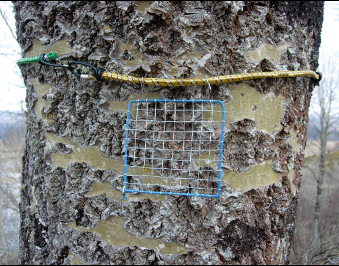
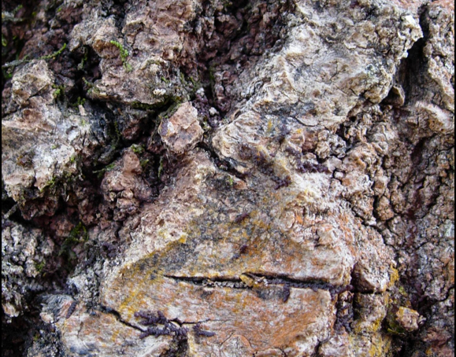
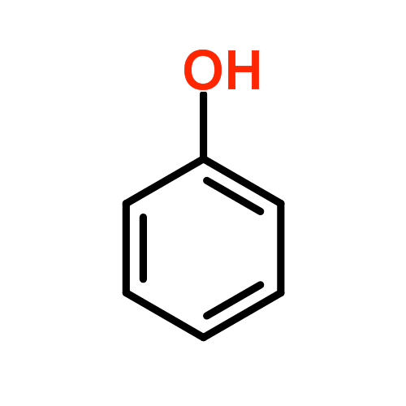
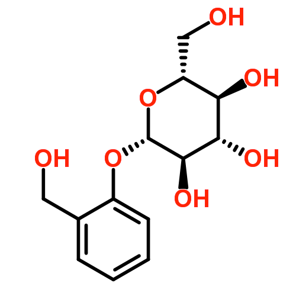

6 Variation in aspen with potential effects on epiphytes
6.1 Aspen bark and its variability
When aspen bark is first formed it is smooth, thin and photosynthetic (Kaufert 1937). It comprises the periderm which replaces the epidermis as the protective covering and consists of three structures: 1) the cork or phellem; 2) the cork cambium, or phellogen; and 3) the phelloderm. In smooth bark these layers are thin and difficult to discern. The bark is able to stay smooth by maintaining radial and tangential cell growth in the periderm, concomitant with a ‘sloughing off’ of the older and inactive periderm cells. A white bloom of dead periderm cells forms protective layers that also varies in consistency between high and low topographies (Covington 1975).
Rough bark is formed if the integrity of the smooth bark is lost. In these areas of damage new layers of phellogen are induced which produce further phellem, which is forced outwards. The phellem is non-living and comprises inactive suberized cells forming many layers of corky protective tissue. The process of cell differentiation that may result in thickened periderm and rough bark can be complex (Lawson and Poethig 1995; Martín-Trillo and Martínez-Zapater 2002).
A number of different factors can initiate the switch from smooth to rough bark. As a tree ages it will be subject to external stresses which result in greater amounts of damage to the smooth bark, and which then trigger the formation of rough bark. This means that rough bark is more likely to be seen in older bark, located towards the base of the tree, with smoother bark higher up the trunk. The damaged bark of Populus tremuloides was limited to aspects of the trunk exposed to storm damage (Kaufert 1937). Colder north-easterly winds and lack of sunlight may cause damage to the periderm and account for the increase in rough bark on the north and eastern aspects. Finally the propensity to form rough bark may vary according to genotype.
Aspen bark can vary quite dramatically from very smooth to very rough, with some clones appearing ‘patchy’, whilst other clones of similar age have little to no smooth bark for the first 2-3 meters from the ground (personal observation) Figure 6.1.


6.2 Influence of bark on epiphytes
A major morphological feature of aspen, which is likely to affect establishment of lichens, is the bark texture. This shows striking diversity among clones within single populations (Hyvärinen, Halonen, and Kauppi 1992; Sillett et al. 2000; Boudreault et al. 2008; Lamit et al. 2011). This variation in bark texture facilitates the creation of microsites with differences in, for instance, moisture levels (Sheard and Jonescu 1974; Aboal et al. 1999; Zhang 1999; Levia and Herwitz 2005).
Associations between epiphyte functional groups and phorophyte quality (plant surface colonised by epiphytes) have been documented before in several studies. One of the earliest (Hale 1950) described communities of foliose and crustose lichens growing on varying bark textures of a range of tree species from the Aton Forest, Connecticut, USA. The tree species surveyed were separated into rough-barked, smooth-barked and intermediate. By examining the lichen flora on these tree species and comparing differences between bark types, the observation was made that a higher proportion of foliose species were found on rough barked trees, a higher proportion of crustose species were found on smooth barked trees, with an intermingling of functional groups on those trees with a mixture of rough and smooth bark. The process of cracking and fissuring with the sloughing off of outer periderm tissue has the capacity to significantly reduce crustose species, whilst providing a niche for foliose species. Tree species with a tendency to produce rough bark during the process of growth and development were found to have a greater abundance of transitional bark, and therefore a greater mixture of species.
When comparing lichen communities on smooth- and rough-barked tree species from cool temperate rainforests in two climatically similar regions of Victoria, Australia, the dominant group of lichen species found on smooth-barked trees were crustose (Morley and Gibson 2010). Conversely, epiphyte community composition on rougher-barked trees changed as the host changed, which the authors attributed to the development of fissuring and rougher bark over time. These fissures provided a habitat for lichen species that were rare on smooth bark.
Previous research supports the phenomenon that rougher, fissured bark provides a more suitable niche for the establishment of foliose and fruticose lichens, though this may differ for individual species. An example of the effect of bark texture on epiphytic lichens was demonstrated by Moxham (1981) and reiterated by Armstrong and Bradwell (2011). Physical variation in bark was cited as having a ‘profound influence on the growth’, with bark texture recognised as being highly influential in the growth and development of a lichen thallus: the radial growth rate (RaGR) of Xanthoria parietina (a common foliose species preferring nutrient rich substrate) increases on smooth bark as opposed to rough bark.
Patterns of epiphyte diversity associated with the characteristic ‘diamond-shaped’ structure of bark found on older trees have been reported (Street and Street in Cosgrove and Amphlett 2001). More rugged areas appeared to favour certain fruticose Ramalina species. Smoother sections of bark were found to be more commonly populated by crustose species such as Lecidella elaeochroma and Pertusaria or Arthonia spp., with these smooth areas positively influencing growth of other lichens such as Xanthoria parietina (Hyvärinen, Halonen, and Kauppi 1992; Gustafsson and Eriksson 1995; Hemming and Lindroth 1999; Hedenås and Ericson 2000; Street and Street in Cosgrove and Amphlett 2001). The most compelling evidence demonstrating the effect of bark texture influencing epiphyte distribution has been found by Lamit et al. (2011). Replicates of P. angustifolia genotypes were obtained via cuttings from a nearby natural population and established in a common garden experiment for approximately 16 years. After sampling the cover of bark lichen Xanthomendoza galericulata, bark roughness, bole circumference and total bark condensed tannins, significant variation in lichen cover was correlated with Populus genotype. Bark roughness was found to be under significant genetic variation and the genetically based trait that most influenced lichen cover.
6.3 Secondary metabolites of aspen
Like most members of the Salicaceae, aspen produces a range of secondary metabolites, which are substances produced and used by plants for defence against herbivory, high levels of UV radiation, and pathogenic attack (Bennett and Wallsgrove 1994; Grégoire et al. 1997; Ockels et al. 2007). One particular class of metabolites are polyphenols. These compounds are synthesized from the amino acid phenylalanine along the shikimate-phenylpropanoid pathway, and undergo many enzymatic changes to produce phenolic glycosides, flavonoid glycosides, and condensed tannins (proanthocyanidins) (Tsai et al. 2006). Phenolic and flavonoid glycosides are a combination of a sugar attached to non-carbohydrate moiety (the glycoside, or glycone) and a simple phenol ring (in the case of phenolic glycosides) or one of many types of flavonoid (in the case of flavonoid glycosides) (Harborne 1964; Hopkinson 1969) (Figure 6.2).


These latter components are known formally as the aglycone. Some phenolic glycosides (e.g. salicin and salicortin) occur widely throughout many Populus species (Tsai et al. 2006). In recent years, flavonoids in particular have gained a great deal of publicity for their health benefits to humans, particularly as anti-carcinogens and their de-toxifying properties (Ververidis et al. 2007). Large quantities of these compounds are found ubiquitously in plant organs, including bark of Populus species (Pearl and Darling 1968; Richard L. Lindroth and Hwang 1996). Production of phenolics has significant costs to plant growth, especially for genotypes producing high quantities of compounds (Osier and Lindroth 2001, 2004, 2006). Variation in phenolic quantity is largely under genetic control, but varies temporally and spatially according to genotype and environment (R. L. Lindroth, Hsia, and Scriber 1987; Richard L. Lindroth and Hwang 1996; Hemming and Lindroth 1999; Osier and Lindroth 2001; R. L. Lindroth et al. 2002; Whitham et al. 2003; Whitham et al. 2005; Donaldson et al. 2006; Rehill et al. 2006; Donaldson and Lindroth 2007).
6.4 Effects of bark chemicals on lichens
The effects of bark chemicals on epiphytes growing on the bark have not been thoroughly investigated. However, there is evidence of phenolics possessing fungistatic or fungitoxic properties in vitro (Hopkinson 1969; Gupta et al. 1971; Anaya et al. 1999; Evensen et al. 2000; Wang et al. 2010; Ćirić et al. 2011). Evidence was found by Koopmann (2005) linking bark phenolic compounds isolated from Populus and patterns in lichen diversity, and inhibitory allelopathic effects of lichens on co-occurring cryptogams, including other lichen species mediating differences in the lichen communities associated with aspen via defense reactions initiated after colonization of the bark, as with fungi (Bennett and Wallsgrove 1994). It is therefore of special interest to determine whether epiphyte communities on aspen vary among clones, and whether this variation in epiphyte communities can be accounted for by differences in physical and chemical properties of the trees.